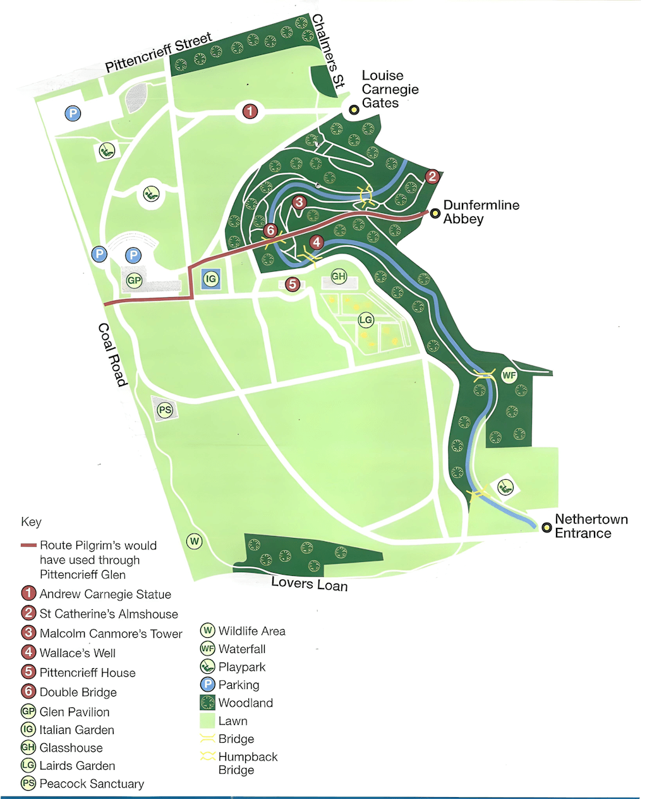
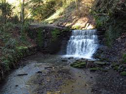

Navigation
Explore the Grounds
Toggle between the geographical satellite view and the illustrated garden plan.


Pittencrieff Park · Dunfermline, Scotland
A 76-acre historical legacy gifted by Andrew Carnegie, where nature and heritage intertwine.
Navigation
Toggle between the geographical satellite view and the illustrated garden plan.

Ecosystem
The park hosts a rich tapestry of wildlife, from resident peacocks to ancient woodland canopy.

Acres
Of diverse landscape, from formal gardens to deep woodland glens.
Established
Purchased by Andrew Carnegie and given to the people of Dunfermline.
Recognition
Voted Scotland's best park multiple times for its beauty and heritage.